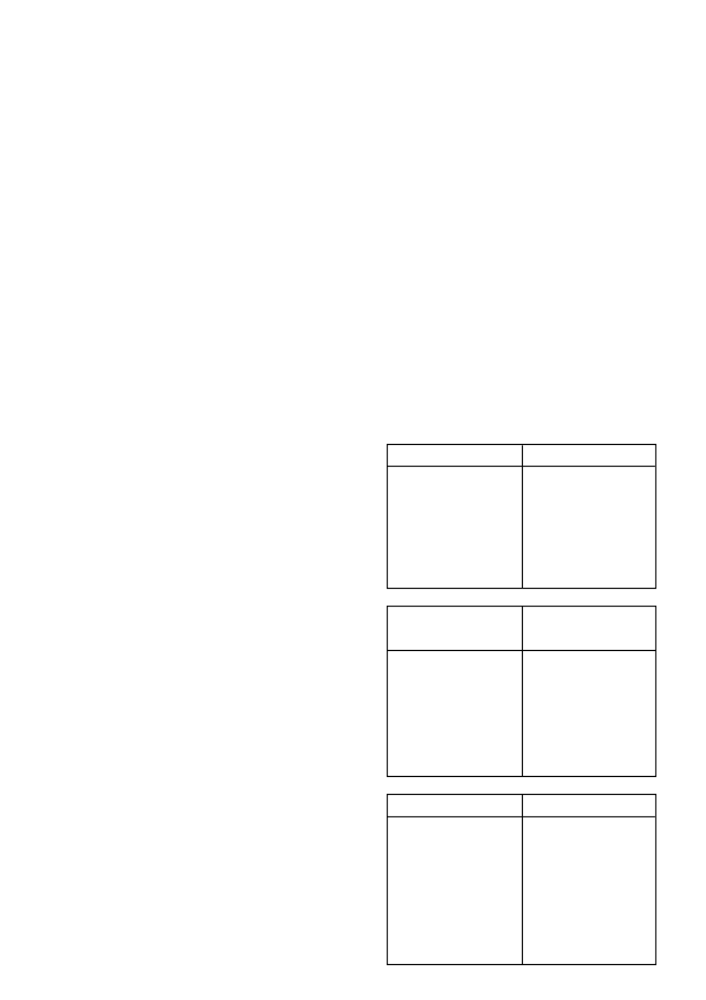

•
Dra sorg dat boorgate en damme nie gekontamineer word met
chemikalië wat in toevoer pype en moederlyne teen woordig
mag wees nie. Die toediening van chemikalië moet verkieslik
naby die spilpunt gedoen word. Beide die toedie ningspomp en
die waterpomp moet van kleppe voorsien wees wat toedie ning
sal staak sodra die voorwaartse bewe ging van die spilpunt
stelsel gestaak word. Die water toevoer pyp moet ook van ‘n
klep voorsien word wat sal verhoed dat behandelde water sal
terugvloei na die waterbron.
6. GEWASSE:
6.1 MIELIES:
•
Die toedieningshoeveelheid van
CAMIX
word nie beïnvloed
deur die kleipersentasie van die grond nie.
•
CAMIX
kan vooropkoms van beide die gewas en onkruide
toegedien word.
•
Die vooropkoms toediening van
CAMIX
moet op ‘n goed
voorbereide onkruidvrye saadbed toegedien word om ewere-
dige verspreiding te verseker.
•
Indien
CAMIX
toegedien word soos aangedui, kan beheer van
ongeveer 28 - 56 dae verwag word vir die onkruide soos gelys.
6.1.1
Vooropkoms toediening van CAMIX plus GESAPRIM
SUPER:
(Hierdie vooropkoms toediening moet gevolg word deur na-
opkoms toedienings van geregistreerde mengsels van CALLISTO,
GARDOMIL GOLD, METAGAN GOLD of GESAPRIM SUPER
ongeveer 5 - 6 weke later
soos aangedui op die geregi streerde
etikette).
CAMIX
/ 3
van fyn druppels (kleiner as 150 mikrons – hoë drywing en
verdampingspotensiaal) tot ‘n minimum beperk word.
•
Vlieghoogte:
Die hoogte van die spuitbalk moet op 3 - 4
meter bo die teiken gehandhaaf word. Moet nie spuit wan-
neer die vliegtuig aan die bopunt is van, of tydens ‘n duik nie,
of terwyl dit opstyg of draai nie.
5.5.2
Toerusting:
•
Gebruik geskikte spuitapparaat (hidroliese of roterende spuit-
koppe) wat die vereiste druppelgrootte en bedekking sal
produseer, maar wat die minste verlies van produk deur
endodrywing (binne die teikenarea) of eksodrywing (buite die
teikenarea) sal verseker.
•
Die operateur moet ‘n stelsel kies wat ‘n druppelspektrum met
die kleinste moontlike relatiewe spanwydte sal produseer.
•
Al die spuitpunte / atomiseerders moet in die binneste 60%
- 75% van die vlerkspan geplaas word om die beweging van
druppels in die vlerkvorteks in te beperk.
5.5.3
Meteorologiese toestande:
•
Die verskil in temperatuur tussen die nat- en droëbol-
termometer van ‘n swaaihigrometer, moet nie 8°C oorskry nie.
•
Staak toediening indien die windspoed 15 km/uur oorskry.
•
CAMIX
moet nie uit die lug toegedien word tydens onstabiele,
turbulente toestande gedurende die hitte van die dag wanneer
stygende en dalende konveksie windbeweging plaasvind nie.
•
Dit is belangrik om daarop te let dat die lugtoediening van
CAMIX
onder temperatuur inversie toestande (deur bo of
binne die inversie laag te spuit) tot die volgende probleme mag
aanleiding gee.
•
Verlaagde effektiwiteit aangesien die druppels as ‘n wolk
in die lug bly hang en moontlik verdamp (onvoldoende
bedekking op teiken), of
•
Skade aan ander nie-teiken gewasse of ander sensitiewe
areas a.g.v die wegdrywing.
5.6
Spilpunt toediening:
(Slegs vooropkoms in mielies)
CAMIX
kan met behulp van ‘n spilpunt toegedien word mits dit
goed bestuur en onderhou word.
Die spilpunt moet tussen 4,5 mm en 7,5 mm water toedien tydens
die toediening van
CAMIX
. Effektiewe beheer van 56 dae sal
verkry word waarna die opvolg bespuitings met behulp van ‘n
gewone trekkerbespuiting gedoen moet word.
KARATE kan by hierdie mengsel gevoeg word om snywurms teen
die geregistreerde dosis (70 m
l
/ha) te beheer.
•
Bereken die toedienings tempo versigtig en verseker die
korrekt heid daarvan.
•
Dra sorg dat die toediening binne 2 dae van plant plaasvind.
•
Toedienings mag slegs geskied op lande wat goed voorberei
is, ‘n goeie fyn saadbed het en waar geen ontkiemende of
gevestigde onkruide voorkom nie.
•
Toedienings deur die spilpunt moet slegs gedoen word deur
spilpunte wat toegerus is met geskikte toedieners.
•
Sodra die
CAMIX
oor die hele area met die spilpunt toegedien
is moet die volgende watervolumes toegedien word.
•
10 mm water per ha by ‘n klei persentasie van < 20%
•
15 mm water per ha by ‘n klei persentasie van 20 - 35%
•
20 mm water per ha by ‘n klei persentasie van > 35%
•
Hou die grond nat vir ‘n periode van 7 - 14 dae na toedie ning.
•
Neem kennis dat die toediening van
CAMIX
net so eenvormig
toegedien sal wees soos die besproeiings eenvormigheid.
•
Moenie
CAMIX
deur die spilpunt toedien in oormatige winde-
rige toestande nie (< 6 ms
-1
)
•
Wees versigtig wanneer die spilpunt aan die einde van die
toedieningsperiode oorvleuel met die beginpunt vir onnodige
skade as gevolg van oordossering.
•
Wees versigtig tydens die toediening van
CAMIX
deur die
spilpunt aangesien onnodige stop en brekasies kan lei tot
oordosering.
CAMIX
Acanthospermum hispidum
Chenopodium album
Chenopodium carinatum
Echinochloa colona
Eleusine indica
Nicandra physaloides
Panicum schinzii
Physalis angulata
Setaria pallide-fusca
Tagetes minuta
0,9
l
/ha
regop sterklits
withondebossie
groen hondebossie
moerasgras
jongosgras
basterappelliefie
soet buffelsgras
wilde appelliefie
rooi borselgras
khakibos
CAMIX
+
GESAPRIM SUPER
Acanthospermum hispidum
Chenopodium album
Chenopodium carinatum
Echinochloa colona
Eleusine indica
Nicandra physaloides
Panicum schinzii
Physalis angulata
Setaria pallide-fusca
Tagetes minuta
0,9
l
/ha
+
0,8 - 1,33
l
/ha
regop sterklits
withondebossie
groen hondebossie
moerasgras
jongosgras
basterappelliefie
soet buffelsgras
wilde appelliefie
rooi borselgras
khakibos
CAMIX
Acanthospermum hispidum
Amaranthus hybridus
Brachiaria eruciformis
Chenopodium album
Chenopodium carinatum
Cleome monophylla
Commelina benghalensis
* Datura ferox
Digitaria sanguinalis
Echinochloa colona
Eleusine indica
1,2
l
/ha
regop sterklits
gewone misbredie
litjiesinjaalgras
withondebossie
groen hondebossie
rusperbossie
Bengaalse wandelende
Jood
grootstinkblaar
kruisvingergras
moerasgras
jongosgras
